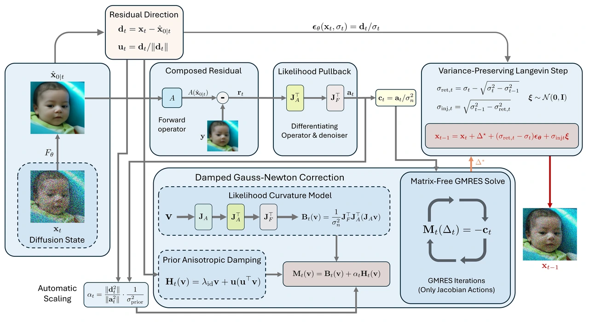
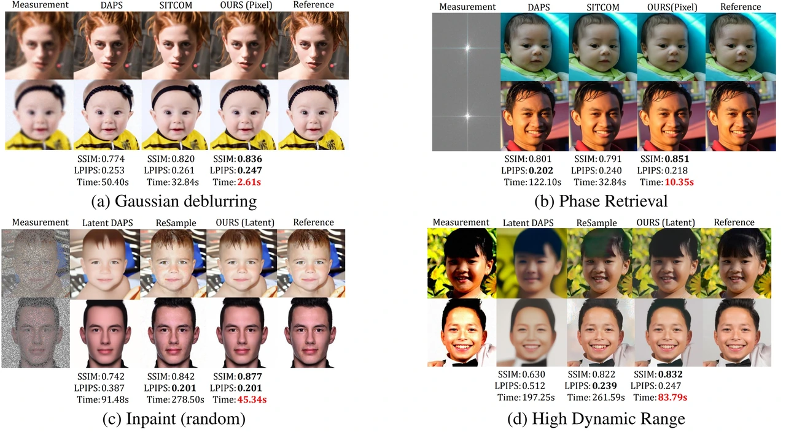
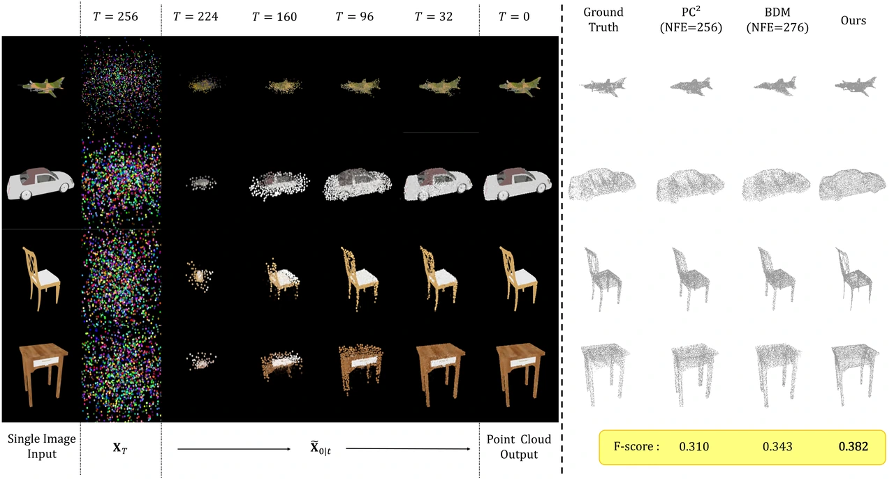

ICML 2026
CLAMP · Geometry-aware posterior sampling
Reconstructs images from incomplete measurements using diffusion guidance that adapts to the measurement geometry.
Our research connects generative modeling with probabilistic inference: how to learn distributions, condition them on evidence, and draw useful, diverse samples.
How can learned distributions support more capable and reliable conditioning?
We study modeling principles that connect what a generative model learns with how it responds to new evidence. Our interests include conditional distributions, mixed data types, and the computational cost of inference.
How can generative priors recover information from incomplete or noisy observations?
Our work develops likelihood corrections, geometry-aware updates, and efficient sampling methods. Image restoration and 3D reconstruction provide concrete settings for studying the interaction between learned priors and measurement models.
How can we generate multiple useful solutions under objectives and constraints?
We are exploring how probabilistic sampling can connect reward guidance, feasibility, and diversity. The aim is to understand distributions of desirable solutions and the principles needed to sample from them.

ICML 2026
Reconstructs images from incomplete measurements using diffusion guidance that adapts to the measurement geometry.

ICLR 2026
Speeds up image restoration with analytic updates and explicit measurement constraints, avoiding costly inner sampling loops.

NeurIPS 2025 · Spotlight
Reconstructs 3D point clouds from one or more views using adaptive diffusion updates, without retraining for each input setting.